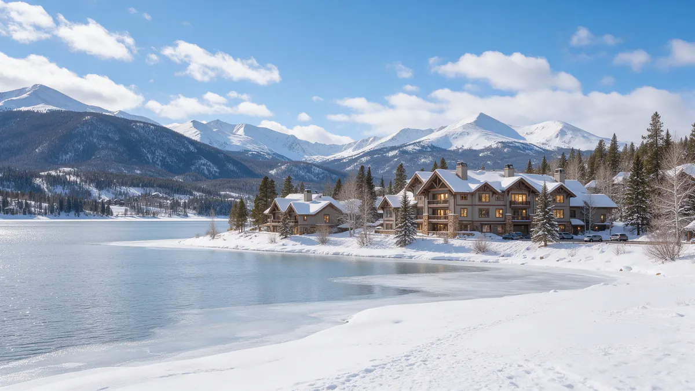

Dillon CO Water Leak Repair: A Handbook for Condo and Cabin Owners

Dillon CO water leak repair often means dealing with cold first and water second. At 9,000 feet beside Lake Dillon, frozen lines, vacant units and shared buildings shape most plumbing trouble. This handbook explains what to do in the first minutes, how a plumber typically works through a mountain leak, and what to ask. Plumbing Pros Colorado is a referral line that connects you with independent local plumbers.
What to do the moment you find water
Shut off the main for your unit or house first. In a condo, that valve may be inside a utility closet, and a building-wide shutoff may be held by the association or a property manager. Call them right away if water is traveling into other units.
Then open a faucet at the lowest point, move belongings out of the wet zone and photograph everything. If a pipe is still iced, do not use a torch. Gentle warmth from a hair dryer on an open faucet line is the safer approach.
If other units are being soaked, the building manager may need to shut a riser or call the association's own contact first. Do that while you wait for the plumber you are connected with.
Signs of freeze damage
- no water at one faucet
- frost on an exposed pipe
- bulging or cracked section
- sudden wet drywall after a warm day
- hissing near a heat register
- boiler pressure dropping
Many splits stay hidden until the ice melts. A cold stretch below 32°F followed by a thaw is when owners return to a soaked ceiling. Pipes in exterior walls, unheated garages and under decks facing the Tenmile Range shadow are classic spots.
Wrap exposed pipe sections with foam insulation and seal gaps where cold air gets in. Air leaks near plumbing walls do more harm than cold temperatures alone.
How a plumber approaches a mountain leak
The plumber usually confirms the source, closes valves to isolate it, and decides whether the break is a simple section or part of a bigger problem. In condos, that includes finding out whether the pipe belongs to the unit or to the building.
Boilers, radiant heat loops and water heaters add another layer. A pressure drop in a heating system can mimic a domestic water leak, so a good diagnosis separates the two systems before opening anything up.
Heating systems in the high country run hard for months, so seals, circulators and expansion tanks wear. A plumber who handles boilers can look at the whole loop.
Questions for the plumber you are connected with
Ask whether the failure looks like a one-time freeze or a pattern, such as a poorly insulated run. Ask about access, since mountain buildings can have tight chases and shared walls.
Ask what to tell the association or management. Many Dillon buildings, from lakeside units to homes near the Dillon Marina, have rules about contractors and water shutoffs, so it helps to bring the plumber in knowing them.
Provide the plumber with the building's name and unit number, plus any key or lockbox details, so access is straightforward when owners are out of town.
Getting a vacant place ready for winter
For a second home, many owners shut the water off at the main and drain the lines, while others keep heat on and ask someone to visit. The right choice depends on the building and the heating system.
Whatever your approach, check pipes along exterior walls, garage spaces and crawlspaces before you leave. A visit after a storm on Interstate 70 or Swan Mountain Road is far less stressful when you know the house is prepared.
A neighbor, caretaker or property manager who can check on the place after a storm gives you peace of mind even if everything seems prepared.
Why altitude changes the plan
At this elevation water boils at a lower temperature and heating systems work harder, which is why mountain plumbing is as much about heat as water. A boiler failure can lead to frozen pipes quickly, so a heating problem and a plumbing problem are sometimes the same call.
Dillon is also a gateway town, with the Arapahoe Basin ski area up the road and I-70 close by. Visitor traffic, short-term rentals and long absences mean that many leaks are found by guests or neighbors, not owners. Leaving clear instructions for caretakers is time well spent.
Frequently asked questions
Can a frozen pipe thaw without bursting?
Yes, sometimes it does. But a pipe that froze may be cracked and only leak once thawed. Keep the main handy and watch for drips. If the building has a shared hot water system, tell the plumber, since a leak could affect more than one unit.
Who pays attention to a leak in a shared wall?
That depends on your governing documents. The association may handle common lines while the owner handles the unit side. The plumber can help identify where the line belongs. Hot-water baseboard and in-floor heat can leak slowly and show up as a wet floor, so mention that kind of system if you have one.
Is it normal for a boiler to lose pressure?
Small changes happen, but repeated drops suggest a leak in the heating loop. A plumber who handles hydronic systems can check it. A good record of when the water was last on and who last visited helps trace when damage occurred.
How do I drain pipes for winter?
Close the main, open all faucets, flush toilets and drain the water heater if appropriate. Because systems vary, ask a plumber if you are unsure. Taking photos before leaving for the winter provides a useful baseline if you later need to show what changed.
Do you serve Frisco and Breckenridge too?
We connect callers with independent plumbers in Summit County. Share your town when you call so a suitable match is made. Summit County is a short drive, but mountain weather can change availability, so share your location and timing clearly.
Plumbing services in Dillon
- Water Leak Repair
- Emergency Plumbing
- Drain Cleaning
- Water Heater Services
- Sewer Line Repair
- Gas Line Services
- Slab Leak Repair
- Pipe Repair & Replacement
- Toilet Repair
- Bathroom Plumbing
Nearby Colorado cities
- Water leak repair in Fountain
- Water leak repair in Pueblo
- Water leak repair in Castle Rock
- Water leak repair in Littleton
Ready to talk to someone? Call (720) 794-0974 or visit speak with a Summit County plumber.